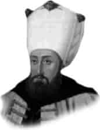

III. AHMET
Annesi : Emetullah Rabia Gülnüş Sultan
Doğumu : 31 Aralık 1673
Vefatı : 1 Temmuz 1736
Saltanatı : 1703 - 1730 (27 yıl)
III. Ahmet; uzun boylu, kara gözlü, doğan burunlu ve buğday benizli idi. Hattat ve şairdi. “Necib” mahlasıyla şiirler yazmıştır. Musikiden de anlardı.
Devrinde Oran Şehri İspanyollardan alındı. 1711 yılında Prut Seferi’ne çıkıldı. Prut Ovası’nda Rus Ordusu feci şekilde kıstırıldı ve Rusya ile anlaşma yapıldı. İsveç kralının dört yıllık misafirliği de bu devire rastlamıştır.
Azak Ruslardan geri alındı. 1715’de Mora Seferi yapıldı ve Mora Venediklilerden geri alındı. 1718’de Almanya ve Venedikle Pasorofça barışı yapıldı. Lâle Devri denilen meşhur devir bu tarihten sonra başladı. 1722’de Dağıstan Türk tabiiyetine girdi. Ancak 1723’de İran Savaşı başladı. İran’ın beş büyük eyaleti işgal edildi. Hemedan Antlaşması 1727’de yapıldı. Sonradan İranlılar işgal edilen yerlerin bir kısmını geri aldılar. Yine 1727’de ilk Türk matbaası açıldı.
28 Eylül 1730’da Patrona Halil İsyanı oldu. III. Ahmet durumun vehametini anladı ve yeğeni I. Mahmut’u padişahlığa oturttu.
Bir müddet sonra da altmış iki yaşında vefat etti.
Erkek çocukları: I. Abdülhamit, III. Mustafa, Süleyman, Beyazıt, Mehmet, İbrahim, Numan, Selim, Ali, İsa, Murat, Seyfeddin, Abdülmecit, Abdülmelik.
Kız çocukları: Emine, Rabia, Habibe, Zübeyde, Esma, Hatice, Rukiye, Saliha, Atike, Reyhan, Esime, Ferdane, Nazife, Naile, Ayşe, Fatma, Emetullah, Ümmü Selma, Emine, Ruki-ye, Zeynep, Sabiha.